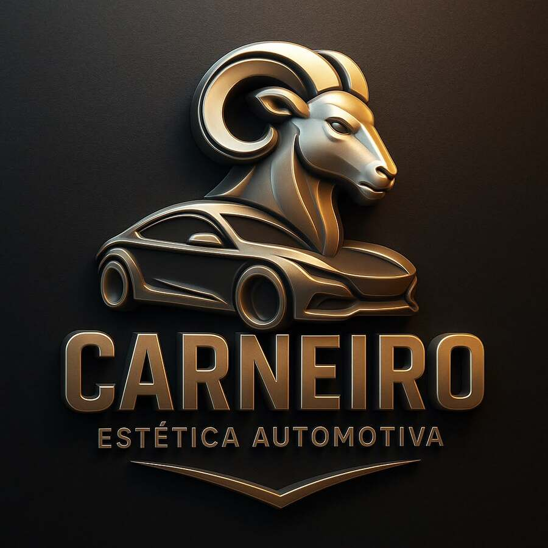

Estética automotiva para carros e motos. Detalhamento, brilho e proteção feitos com a dedicação de quem ama o que faz.
Corrige riscos finos e marcas de lavagem, devolvendo cor e profundidade à pintura.
Proteção cerâmica que realça o brilho, repele a sujeira e facilita as próximas lavagens.
Estofados, carpetes e teto higienizados profundamente, sem cheiro de umidade.
Trabalhos feitos aqui, na nossa oficina.
Lavar o carro em casa com esponja e sabão em pó pode riscar a pintura sem que você perceba. A lavagem profissional ajuda a proteger o seu investimento.
Espuma que solta a sujeira antes de qualquer toque.
Remove piche e partículas de ferro da pintura.
Polimento no ponto certo, sem exagero.
Vitrificação ou cristalização para durar.
Mande uma foto do veículo e receba o orçamento pelo WhatsApp.